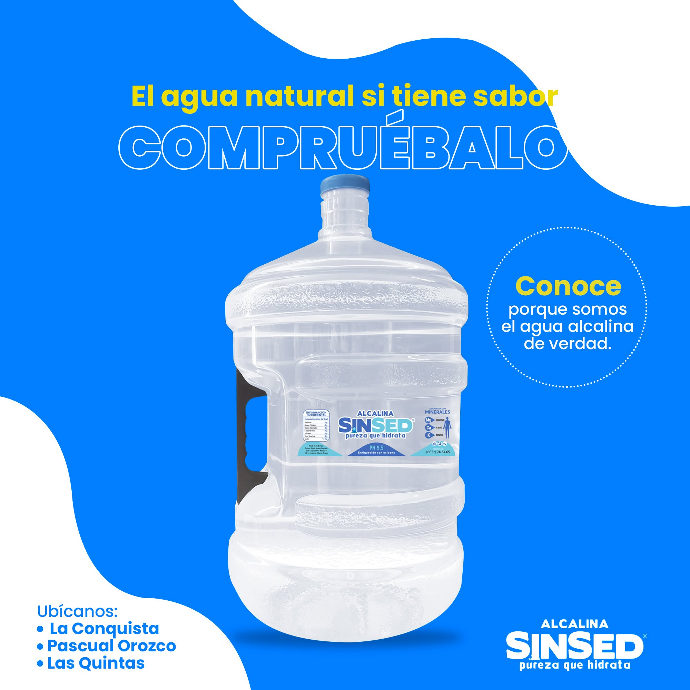
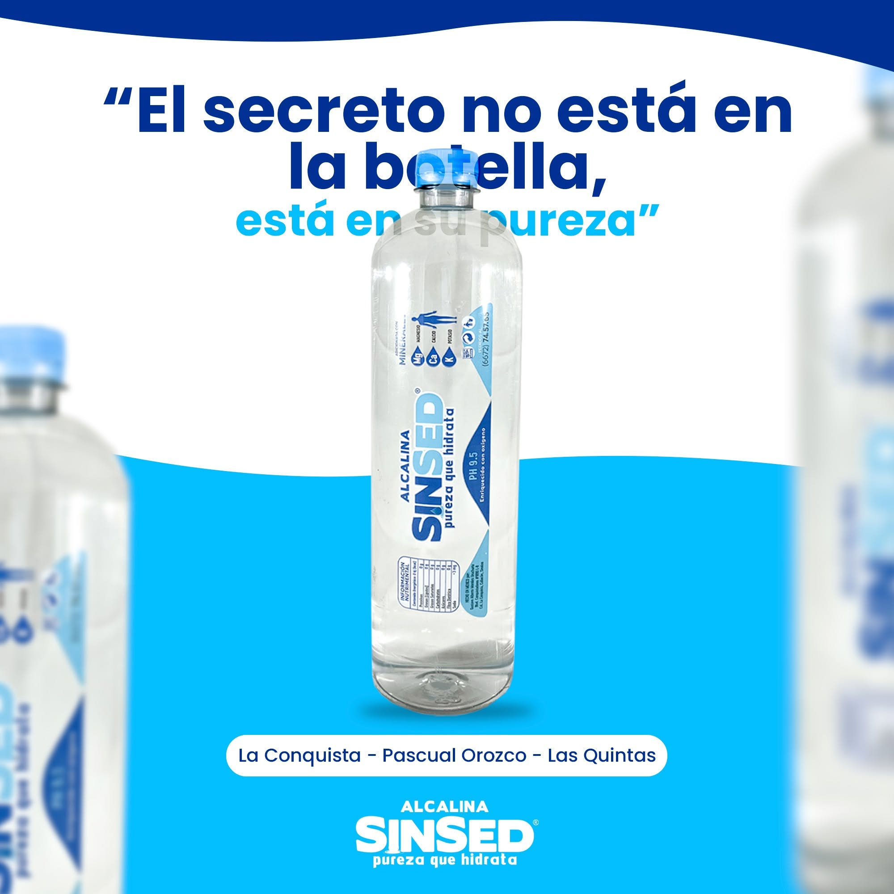
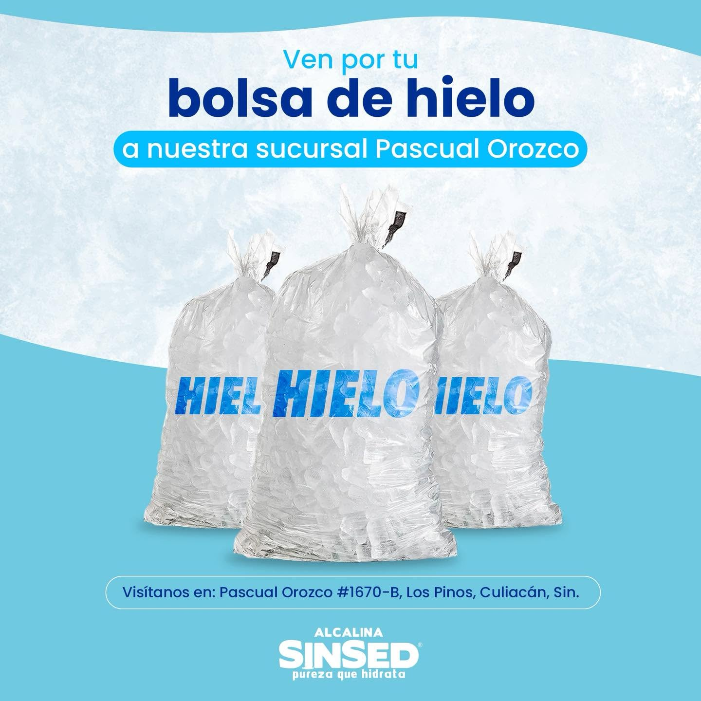

Recarga de Garrafón (20 Litros)
Servicio de recarga a granel de nuestra agua 100% alcalina directamente en sucursal. Trae tu garrafón y llévate la mejor hidratación a casa.

Pureza que hidrata. Venta de Agua 100% Alcalina y franquicias.
Proveer agua alcalina pura y refrescante que contribuya al bienestar y la salud de nuestros clientes, ofreciendo un servicio de recarga y venta de hielo confiable y de la más alta calidad.
Ser el negocio líder en distribución de agua purificada y hielo en la región, reconocidos por nuestra higiene, excelencia operativa y atención al cliente.
Servicio de recarga a granel de nuestra agua 100% alcalina directamente en sucursal. Trae tu garrafón y llévate la mejor hidratación a casa.

Práctico paquete con 24 botellas de medio litro. Ideal para llevar la pureza que hidrata al trabajo, gimnasio o en el auto para toda la familia.

Hielo cristalino elaborado bajo los estrictos estándares de purificación de nuestra agua. Perfecto para tus reuniones y eventos.

¿Tienes dudas sobre nuestras franquicias, precios o el proceso de alcalinización? Escríbenos.